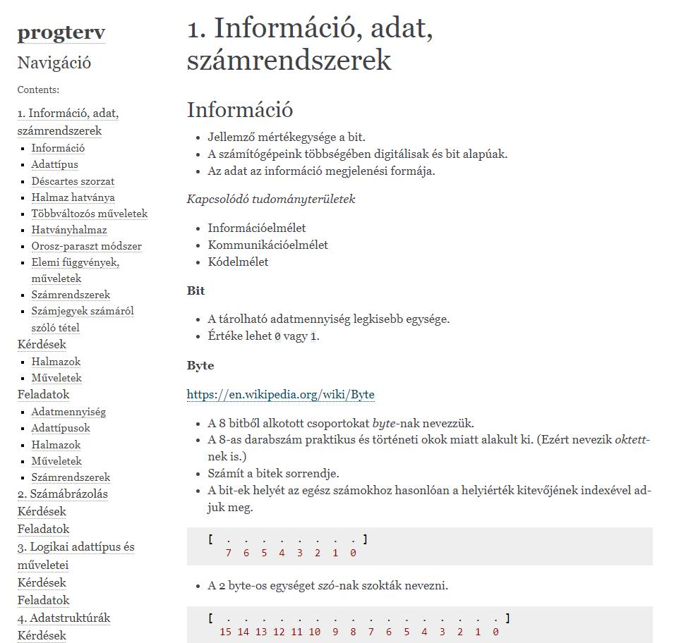

A "Programtervezési Ismeretek" tárgy célja a szoftvertervezés alapvető elveinek és módszertanainak bemutatása. A kurzus során a hallgatók megismerik azokat a lépéseket és folyamatokat, amelyeket a szoftvertervezés során alkalmaznak a hatékony és strukturált programok létrehozása érdekében.
A tárgyban áttekintjük az információ és adat fogalmát, tanulmányozzuk a Déscartes szorzatot, elemi függvényeket és műveleteket, valamint mélyedünk a különböző számrendszerek és az azok közötti átváltások ismeretébe.
Megvizsgáljuk a számok ábrázolását, beleértve az előjellel és előjel nélkül rendelkező számokat. A tárgy során tanuljuk meg a logikai adattípusokat és azok műveleteit, valamint a diszjunktív- és konjunktív normálformákat, logikai kapuáramköröket.
Az adatstruktúrák közé tartozó tömböktől kezdve a többdimenziós adatszerkezetekig (mátrixok, listák, fák) és az alapvető algoritmusokig tekintjük át a tárgy során.
Elmélyítjük a programozási paradigmákat, megvizsgáljuk a számítógép elvi felépítését, a gépi kódot, tárgykódot és a fordítás, interpretálás folyamatait.
Ismerkedünk a típus konverziókkal, beleértve a szám-szöveg, szöveg-szám, lebegőpontos számok, dátum és idő konverzióját. Továbbá, a hibakezelés területén a különböző hibatípusokat, típusbiztonságot és a hibakezelési technikákat vizsgáljuk.
Tanulmányozzuk a forráskód szervezésének módjait, a függőségek kezelését, rendszerintegrációt, verziókezelést és különböző programozási elveket, módszertanokat (DRY, SOLID, SCRUM, KANBAN, TDD).